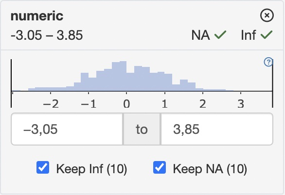
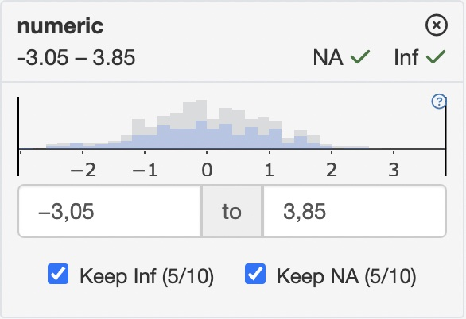

Filter panel for developers
NEST Core Dev Team
10/07/2023
filter-panel-for-developers.RmdFilter Panel API
Getting and setting filter states
All filter panel classes have dedicated methods to set and get current filter state. These methods include:
-
get_filter_state- returns the current state of filters in form ofteal_slicesobject -
set_filter_state- adds or modifies the filters based onteal_slicesobject -
remove_filter_state- removes particular filter states based onteal_slicesobject -
clear_filter_states- removes all filter states
Setting and getting filter states are done through
teal_slices object which is a collection of
teal_slice objects. Think of a teal_slice as a
quantum of information that fully describes the filter state of one
variable.
In order to tell FilteredData to set a filter for a
specific variable, one must call the set_filter_state
method with a teal_slices object containing a
teal_slice that refers to the variable of interest. To
remove a particular FilterState object, one must call the
remove_filter_state method using a teal_slices
containing a teal_slice that refers to the respective
variable.
Each teal_slice object contains all the information
necessary to:
-
Determine the column in the data set on which to apply the filter expression:
-
dataname- name of the data set -
varname- name of the column -
experiment(only forMultiAssayExperimentobjects) - name of the experiment -
arg(only forSummarizedExperimentobjects, e.g within aMultiAssayExperiment) - name of the argument in the call tosubset(subsetofselect)
-
-
Express or store the current selection state:
-
selected- selected values or limits of the selected range -
keep_inf- determines ifInfvalues should be dropped -
keep_na- determines ifNAvalues should be dropped -
expr- explicit logical expression
-
-
Control the behavior and appearance of the
FilterStateobject:-
choices- determines the set of values or the range that can be selected from -
multiple(only forChoiceFilterState) - allows multiple values to be selected -
fixed- forbids changing state of theFilterState -
locked- forbids removal of theFilterState -
title- displayed title of the filter card
-
In addition, every teal_slice object has an
id.
It is impossible to create FilteredData with slices with
duplicated ids. This is because filter states are both
created and modified with the set_filter_state method so if
two consecutive calls to set_filter_state are passed a
teal_slice with the same id, the first call will
instantiate a FilterState, and the second call will modify
it.
Creating teal_slices with slices with duplicated
ids is forbidden and will raise an error.
1. Setting the filter state
library(teal.slice)
datasets <- init_filtered_data(
list(
iris = list(dataset = iris),
mtcars = list(dataset = mtcars)
)
)
set_filter_state(
datasets = datasets,
filter = teal_slices(
teal_slice(dataname = "iris", varname = "Species", selected = "virginica", keep_na = FALSE),
teal_slice(dataname = "mtcars", id = "4 cyl", title = "4 Cylinders", expr = "cyl == 4"),
teal_slice(dataname = "mtcars", varname = "mpg", selected = c(20.0, 25.0), keep_na = FALSE, keep_inf = FALSE),
include_varnames = list(iris = c("Species", "Sepal.Length")),
exclude_varnames = list(mtcars = "cyl")
)
)2. Updating filter states. *Works only in the shiny reactive context.
set_filter_state(
datasets = datasets,
filter = teal_slices(
teal_slice(dataname = "mtcars", varname = "mpg", selected = c(22.0, 25.0))
)
)3. Getting the filter state
get_filter_state(datasets)## {
## "slices": [
## {
## "dataname" : "iris",
## "varname" : "Species",
## "id" : "iris Specie...
## "choices" : ["setosa", "...
## "selected" : ["virginica"..
## "keep_na" : false,
## "fixed" : false,
## "locked" : false,
## "multiple" : true
## },
## {
## "dataname" : "mtcars",
## "id" : "4 cyl",
## "expr" : "cyl == 4",
## "fixed" : false,
## "locked" : false,
## "title" : "4 Cylinders.
## },
## {
## "dataname" : "mtcars",
## "varname" : "mpg",
## "id" : "mtcars mpg".
## "choices" : [10.4, 34],
## "selected" : [22, 25],
## "keep_na" : false,
## "keep_inf" : false,
## "fixed" : false,
## "locked" : false,
## "multiple" : true
## }
## ],
## "attributes": {
## "exclude_varnames" : {
## "mtcars" : "cyl"
## },
## "include_varnames" : {
## "iris" : ["Species", ...
## },
## "count_type" : "none",
## "module_add" : true
## }
## }4. Removing filter states
remove_filter_state(
datasets = datasets,
filter = teal_slices(
teal_slice(dataname = "iris", varname = "Species")
)
)5. Clearing the filter state
clear_filter_states(datasets)Controlling settings of the filter panel
In addition to controlling individual filter states through
set_filter_state, one can also manage some general
behaviors of the whole filter panel. This can be done with arguments of
the teal_slices function:
-
include_varnamesdefines which columns in the used data sets are allowed to be filtered on. In the following example only two columns ofirisand two columns ofmtcarswill be able to have filters set.
set_filter_state(
datasets,
teal_slices(
include_varnames = list(
iris = c("Species", "Sepal.Length"),
mtcard = c("cyl", "mpg")
)
)
)-
exclude_varnamesdefines which columns in the used data sets are not allowed to be filtered on. In following example all variables except the four will be available to choose from.
set_filter_state(
datasets,
teal_slices(
exclude_varnames = list(
iris = c("Species", "Sepal.Length"),
mtcard = c("cyl", "mpg")
)
)
)-
count_typedefines how observations counts displayed in filter cards
| “none” | “all” |
|---|---|
| Distribution in unfiltered data | Filtered vs. unfiltered distribution |
|  |  |
-
module_adddetermines whether the “Add Filter Variables” module will be displayed to allow the user to add new filters.
Filter panel as a module
All the instructions herein can be utilized to build a shiny app.
library(shiny)
# initializing FilteredData
datasets <- init_filtered_data(
list(
iris = list(dataset = iris),
mtcars = list(dataset = mtcars)
)
)
# setting initial filters
set_filter_state(
datasets = datasets,
filter = teal_slices(
teal_slice(dataname = "iris", varname = "Species", selected = "virginica", keep_na = FALSE),
teal_slice(dataname = "mtcars", id = "4 cyl", title = "4 Cylinders", expr = "cyl == 4"),
teal_slice(dataname = "mtcars", varname = "mpg", selected = c(20.0, 25.0), keep_na = FALSE, keep_inf = FALSE),
include_varnames = list(iris = c("Species", "Sepal.Length")),
exclude_varnames = list(mtcars = "cyl"),
count_type = "all",
module_add = TRUE
)
)
app <- shinyApp(
ui = fluidPage(
shinyjs::useShinyjs(),
fluidRow(
column(
width = 9,
id = "teal_primary_col",
shiny::tagList(
actionButton("add_species_filter", "Set iris$Species filter"),
actionButton("remove_species_filter", "Remove iris$Species filter"),
actionButton("remove_all_filters", "Remove all filters"),
verbatimTextOutput("rcode"),
verbatimTextOutput("filter_state")
)
),
column(
width = 3,
id = "teal_secondary_col",
datasets$ui_filter_panel("filter_panel")
)
)
),
server = function(input, output, session) {
# calling filter panel module
datasets$srv_filter_panel("filter_panel")
# displaying actual filter states
output$filter_state <- renderPrint(print(get_filter_state(datasets), trim = FALSE))
# displaying reproducible filter call
output$rcode <- renderText(
paste(
sapply(c("iris", "mtcars"), datasets$get_call),
collapse = "\n"
)
)
# programmatic interaction with FilteredData
observeEvent(input$add_species_filter, {
set_filter_state(
datasets,
teal_slices(
teal_slice(dataname = "iris", varname = "Species", selected = c("setosa", "versicolor"))
)
)
})
# programmatic removal of the FilterState
observeEvent(input$remove_species_filter, {
remove_filter_state(
datasets,
teal_slices(
teal_slice(dataname = "iris", varname = "Species")
)
)
})
observeEvent(input$remove_all_filters, clear_filter_states(datasets))
}
)
if (interactive()) {
runApp(app)
}